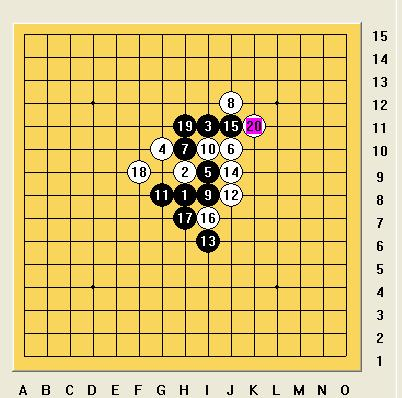

一个朋友的一个对局，问20之后黑能杀吗？
首页
习题专区
#1 一个朋友的一个对局，问20之后黑能杀吗？ 作者：慎独 发表时间：2009-4-21 13:03:21

#2 Re:一个朋友的一个对局，问20之后黑能杀吗？ 作者：wd1988 发表时间：2009-4-21 14:14:02
嗯，楼这么走不知道行不行
=======上图对应的爱五子棋谱代码如下，以便你拆解：========
h8h9i11g10i9j10h10j12i8i10g8j8i6j9j11i7h7f9h11k11g5
======================================================
#3 Re:一个朋友的一个对局，问20之后黑能杀吗？ 作者：学生刀 发表时间：2009-4-21 18:00:12
楼主哪里是来问黑杀的，前一句话才是重点。
#4 Re:一个朋友的一个对局，问20之后黑能杀吗？ 作者：wd1988 发表时间：2009-4-21 18:16:31
???什么意思？
应该是和一个朋友的对局吧，有什么疑问么？
#5 Re:一个朋友的一个对局，问20之后黑能杀吗？ 作者：学生刀 发表时间：2009-4-21 18:38:54
天羽问答 进入板块看看就知道了
#6 Re:一个朋友的一个对局，问20之后黑能杀吗？ 作者：wd1988 发表时间：2009-4-21 18:44:07
现在你就在天羽问答板块呀
#7 Re:一个朋友的一个对局，问20之后黑能杀吗？ 作者：学生刀 发表时间：2009-4-21 18:45:57
我不说了 你还是去解决问题吧
#8 Re:一个朋友的一个对局，问20之后黑能杀吗？ 作者：快乐天羽 发表时间：2009-4-22 17:13:32
这个我没看黑是否能杀掉，估计也是黑大优下去。
但13手直接走9下边，黑简单胜出。LZ可以自己看一下。
=======上图对应的爱五子棋谱代码如下，以便你拆解：========
h8h9i11g10i9j10h10j12i8i10g8j8i7j6j9h7f8e8f6
====================================================== ［ lfzxdh 于 2009-4-22 21:40:10 时花20金币送鲜花一朵］